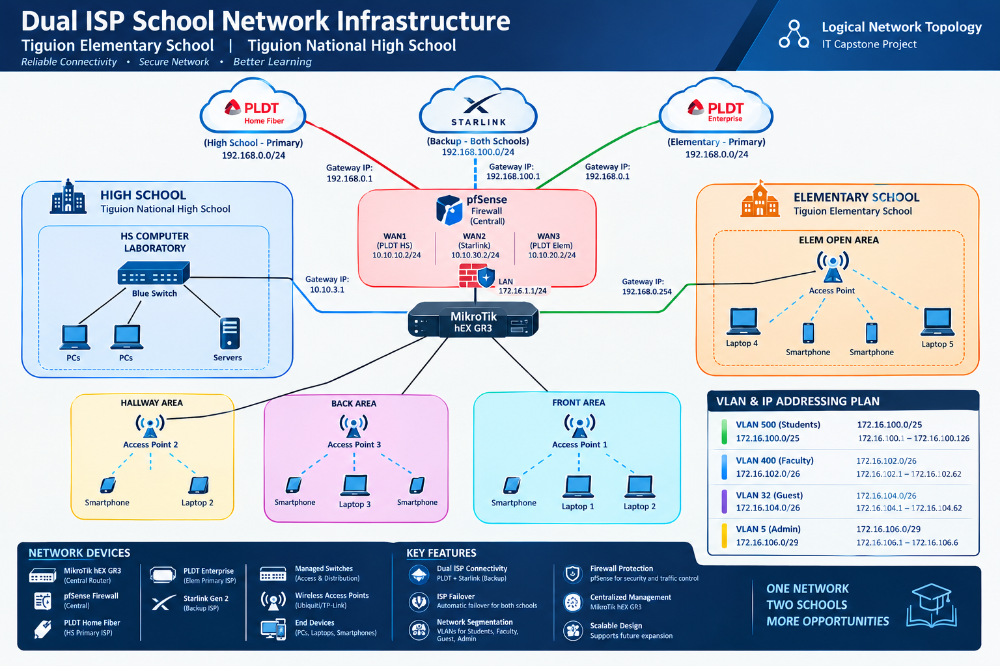

Hi, my name is
Network Professional.
I design reliable infrastructures.
Welcome to my portfolio. I specialize in building secure, scalable, and highly available network architectures for educational institutions and enterprise environments.
Featured Project

Dual ISP School Network Infrastructure
illustrates the logical network design connecting Tiguion National High School and Tiguion Elementary School, with PLDT Home Fiber serving the High School, PLDT Enterprise serving the Elementary School, and Starlink providing shared backup connectivity through one central pfSense firewall and a MikroTik hEX GR3 router. Color-coded sections map the High School computer laboratory, Elementary School open area, and hallway, front, and back wireless access points, while the VLAN and IP addressing panel outlines student, faculty, guest, and administrator networks, complemented by a device inventory and key features highlighting ISP failover, firewall protection, centralized management, network segmentation, and scalability.